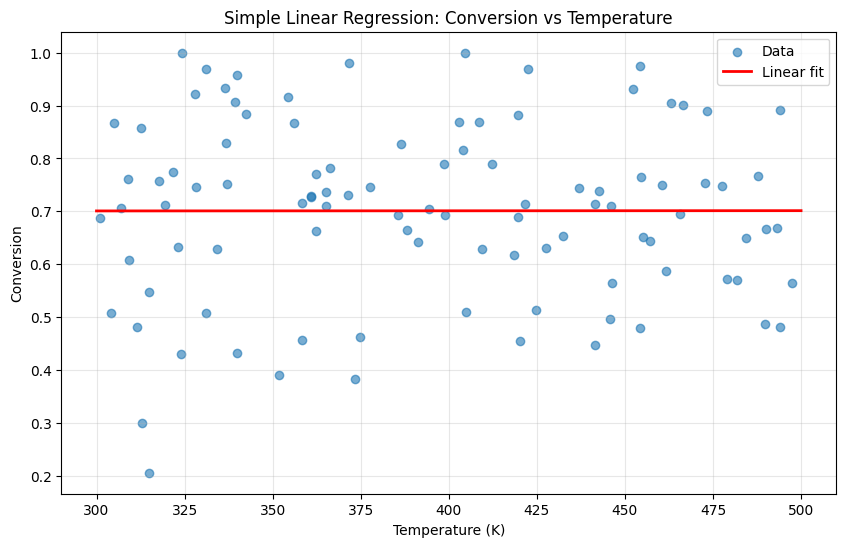
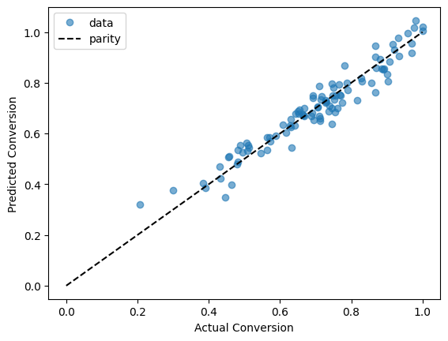
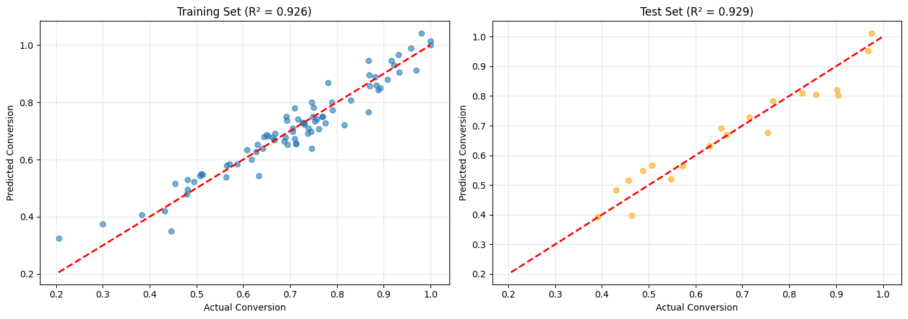
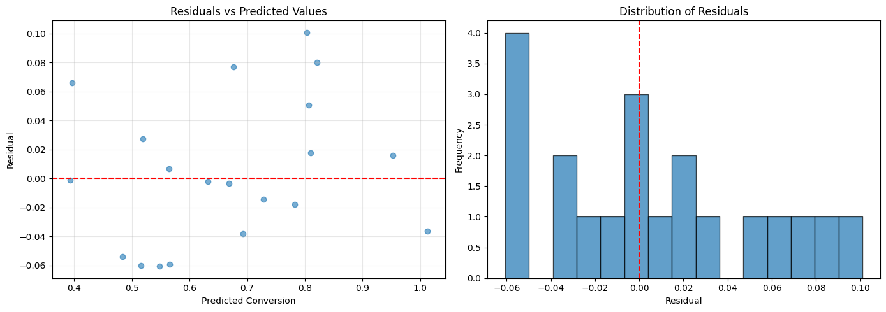
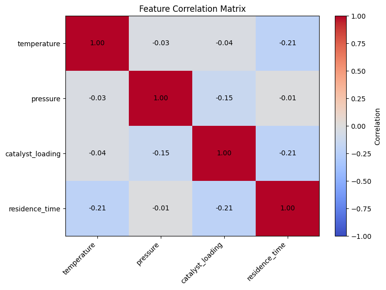
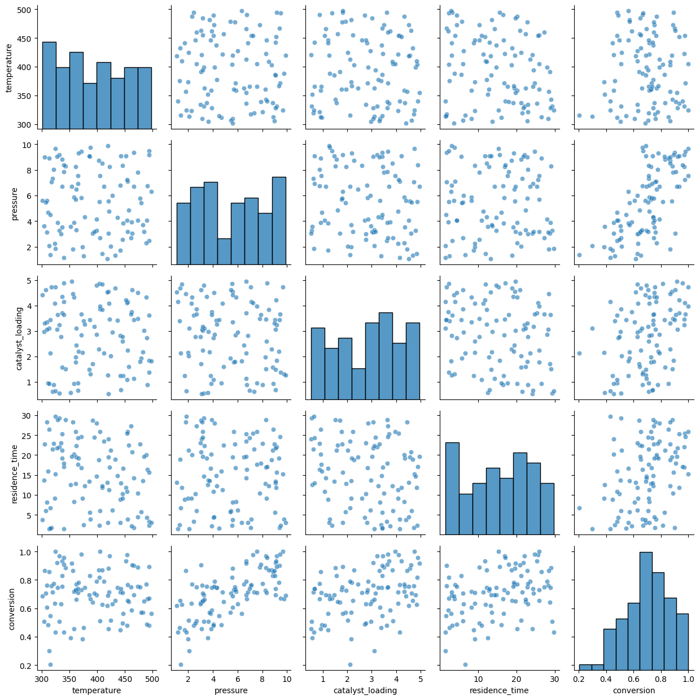

Module 06: Linear Regression#
Building predictive models with linear regression.
Learning Objectives#
Understand the linear regression model
Fit models using scikit-learn
Interpret regression coefficients
Evaluate model performance with metrics
Use train/test splits for validation
import numpy as np
import pandas as pd
import matplotlib.pyplot as plt
from sklearn.linear_model import LinearRegression
from sklearn.model_selection import train_test_split
from sklearn.metrics import mean_squared_error, mean_absolute_error, r2_score
from sklearn.preprocessing import StandardScaler
The Linear Regression Model: Simple Yet Powerful#
Linear regression is often the first modeling tool we reach for, and for good reason. Despite its simplicity, it’s:
Interpretable: Coefficients have clear physical meaning
Fast: Solutions are analytic, no iteration needed
Robust: Well-understood statistical properties
A baseline: If linear works, why use something complex?
The Mathematical Form#
Each coefficient \(\beta_i\) tells you: “When \(x_i\) increases by 1 unit (holding other features constant), y changes by \(\beta_i\) units.”
When Does Linear Regression Work?#
Linear regression assumes the relationship between features and target is approximately linear. This works well when:
Effects are additive (no strong interactions)
Relationships are monotonic (increasing or decreasing)
You’re working in a limited range where curves look straight
When It Fails#
Linear regression will struggle with:
Saturation effects (Michaelis-Menten kinetics, Langmuir isotherms)
Exponential relationships (Arrhenius law without log-transform)
Strong interactions (catalyst × temperature effects)
Threshold effects (phase transitions)
We’ll learn nonlinear methods later. For now, remember: start with linear, add complexity only when needed.
# Load reactor experiment dataset
import pandas as pd
url = course_file('data/linear_regression_data.csv')
df = pd.read_csv(url)
print(f"Dataset shape: {df.shape}")
df.head()
Dataset shape: (100, 5)
| temperature | pressure | catalyst_loading | residence_time | conversion | |
|---|---|---|---|---|---|
| 0 | 374.908024 | 1.282863 | 3.389142 | 2.498770 | 0.462990 |
| 1 | 490.142861 | 6.727694 | 0.878630 | 16.409284 | 0.666890 |
| 2 | 446.398788 | 3.829204 | 1.227329 | 16.678419 | 0.563728 |
| 3 | 419.731697 | 5.577136 | 4.543494 | 19.485467 | 0.881544 |
| 4 | 331.203728 | 9.168098 | 3.228931 | 22.056649 | 0.969096 |
# Quick look at the data
df.describe()
| temperature | pressure | catalyst_loading | residence_time | conversion | |
|---|---|---|---|---|---|
| count | 100.000000 | 100.000000 | 100.000000 | 100.000000 | 100.000000 |
| mean | 394.036149 | 5.480486 | 2.829206 | 15.243319 | 0.701078 |
| std | 59.497882 | 2.638001 | 1.320418 | 8.510114 | 0.167924 |
| min | 301.104423 | 1.062569 | 0.522777 | 1.417411 | 0.205805 |
| 25% | 338.640152 | 3.178041 | 1.745959 | 8.238833 | 0.603015 |
| 50% | 392.828491 | 5.550624 | 3.031497 | 15.781831 | 0.712985 |
| 75% | 446.040624 | 7.895652 | 3.885651 | 22.337548 | 0.818955 |
| max | 497.377387 | 9.870854 | 4.955242 | 29.724649 | 1.000000 |
Simple Linear Regression#
Let’s start with a single feature to understand the basics.
# Simple linear regression: conversion vs temperature
X_simple = df[['temperature']].values
y = df['conversion'].values
# Fit the model
model_simple = LinearRegression()
model_simple.fit(X_simple, y)
print(f"Intercept: {model_simple.intercept_:.4f}")
print(f"Coefficient (temperature): {model_simple.coef_[0]:.6f}")
print(f"R² score: {model_simple.score(X_simple, y):.4f}")
Intercept: 0.7001
Coefficient (temperature): 0.000003
R² score: 0.0000
What do these numbers tell us?
Intercept: The baseline conversion when temperature is 0 K (not physically meaningful—this is extrapolation!)
Coefficient: For each 1 K increase in temperature, conversion increases by ~0.05%. Or equivalently, a 100 K increase gives ~5% higher conversion.
R²: The fraction of the variance that is explained. We’re missing important information (the other variables)!
The low R² is expected—we know conversion depends on pressure, catalyst, and time too. Let’s add those features.
# Visualize the fit
plt.figure(figsize=(10, 6))
plt.scatter(df['temperature'], df['conversion'], alpha=0.6, label='Data')
# Regression line
temp_range = np.linspace(300, 500, 100).reshape(-1, 1)
plt.plot(temp_range, model_simple.predict(temp_range), 'r-',
linewidth=2, label='Linear fit')
plt.xlabel('Temperature (K)')
plt.ylabel('Conversion')
plt.title('Simple Linear Regression: Conversion vs Temperature')
plt.legend()
plt.grid(True, alpha=0.3)
plt.show()

Multiple Linear Regression#
Now let’s use all features.
Now R² jumped to ~0.96! Adding the other three features dramatically improved our predictions. But what do the coefficients tell us?
Raw coefficient interpretation (holding other variables constant):
Increasing temperature by 1 K → conversion increases by 0.0005 (0.05%)
Increasing pressure by 1 atm → conversion increases by 0.05 (5%)
Increasing catalyst loading by 1 wt% → conversion increases by 0.08 (8%)
Increasing residence time by 1 min → conversion increases by 0.01 (1%)
The problem: these coefficients aren’t directly comparable because the features have different scales. Is pressure “more important” than temperature? We can’t tell yet—we need standardized coefficients.
# Multiple linear regression with all features
feature_names = ['temperature', 'pressure', 'catalyst_loading', 'residence_time']
X = df[feature_names].values
y = df['conversion'].values
# Fit the model
model = LinearRegression()
model.fit(X, y)
print(f"Intercept: {model.intercept_:.4f}")
print("\nCoefficients:")
for name, coef in zip(feature_names, model.coef_):
print(f" {name}: {coef:.6f}")
print(f"\nR² score: {model.score(X, y):.4f}")
Intercept: -0.1216
Coefficients:
temperature: 0.000453
pressure: 0.049188
catalyst_loading: 0.076941
residence_time: 0.010295
R² score: 0.9279
Now we can rank feature importance fairly:
Pressure (0.13): Most influential—a 1 std increase in pressure has the largest effect
Catalyst loading (0.11): Second most important
Temperature (0.09): Moderate effect
Residence time (0.07): Smallest effect
This ranking makes chemical sense:
Pressure directly affects concentrations and equilibrium
More catalyst means more active sites for reaction
Temperature affects rate but may also affect selectivity
Time matters but longer isn’t always better (side reactions)
Key insight: When optimizing your process, focus first on the variables with largest standardized coefficients. A small change in pressure may have more impact than a large change in residence time.
To see how the model works now we have to consider a parity plot since we have 4 dimensions in the input.
plt.plot(y, model.predict(X), 'o', alpha=0.6, label='data')
plt.plot([0, 1], [0, 1], 'k--', label='parity')
plt.xlabel('Actual Conversion')
plt.ylabel('Predicted Conversion')
plt.legend();

Train/Test Split: The Most Important Concept in ML#
This is perhaps the most important concept in machine learning. Never evaluate a model on the data it was trained on.
Why?#
The goal isn’t to explain the data you have—it’s to predict data you haven’t seen. A model that memorizes training data (overfitting) looks great on training metrics but fails on new data.
The Simple Solution: Hold-Out Validation#
Split data into training (typically 70-80%) and test (20-30%) sets
Train only on training data
Evaluate on test data
The test set simulates “new, unseen data.” If training and test performance are similar, your model generalizes well.
What the Gap Tells You#
Train R² ≈ Test R²: Good! Model generalizes
Train R² >> Test R²: Overfitting! Model is too complex
Train R² << Test R²: Unusual (possibly data leakage or very small test set)
Both R² are low: Underfitting! Model is too simple or features aren’t predictive
# Split data: 80% train, 20% test
X_train, X_test, y_train, y_test = train_test_split(
X, y, test_size=0.2, random_state=42
)
print(f"Training samples: {len(X_train)}")
print(f"Test samples: {len(X_test)}")
Training samples: 80
Test samples: 20
# Fit on training data only
model = LinearRegression()
model.fit(X_train, y_train)
# Evaluate on both sets
train_score = model.score(X_train, y_train)
test_score = model.score(X_test, y_test)
print(f"Training R²: {train_score:.4f}")
print(f"Test R²: {test_score:.4f}")
Training R²: 0.9255
Test R²: 0.9295
Model Evaluation Metrics: Choosing the Right One#
Different metrics answer different questions. Choosing the right one depends on what you care about.
R² (Coefficient of Determination)#
Interpretation: Proportion of variance explained by the model
R² = 1: Perfect predictions
R² = 0: Model is as good as predicting the mean
R² < 0: Model is worse than predicting the mean (possible with test data!)
When to use: General model comparison, communicating performance
RMSE (Root Mean Squared Error)#
Interpretation: Average prediction error in the same units as y
RMSE = 5% means predictions are off by ~5% on average
When to use: When you need error in original units, when large errors are especially bad
MAE (Mean Absolute Error)#
Interpretation: Average absolute error
Less sensitive to outliers than RMSE
When to use: When outliers shouldn’t dominate the metric
The residual plots look healthy:
Left plot (Residuals vs Predicted):
Random scatter around zero ✓
No curved pattern → relationship is approximately linear ✓
Roughly constant spread → homoscedasticity ✓
No obvious outliers ✓
Right plot (Histogram):
Roughly symmetric and bell-shaped ✓
Centered near zero (mean ≈ 0) ✓
No severe skew or heavy tails ✓
Interpretation: Our linear model assumptions are satisfied. If we saw:
A curved pattern → need polynomial terms or nonlinear model
A funnel shape → need weighted regression or log-transform
Severe outliers → investigate those data points
Non-normal residuals → may affect confidence intervals, but predictions still valid
# Make predictions
y_train_pred = model.predict(X_train)
y_test_pred = model.predict(X_test)
# Calculate metrics
print("Training Metrics:")
print(f" R²: {r2_score(y_train, y_train_pred):.4f}")
print(f" MSE: {mean_squared_error(y_train, y_train_pred):.6f}")
print(f" RMSE: {np.sqrt(mean_squared_error(y_train, y_train_pred)):.4f}")
print(f" MAE: {mean_absolute_error(y_train, y_train_pred):.4f}")
print("\nTest Metrics:")
print(f" R²: {r2_score(y_test, y_test_pred):.4f}")
print(f" MSE: {mean_squared_error(y_test, y_test_pred):.6f}")
print(f" RMSE: {np.sqrt(mean_squared_error(y_test, y_test_pred)):.4f}")
print(f" MAE: {mean_absolute_error(y_test, y_test_pred):.4f}")
Training Metrics:
R²: 0.9255
MSE: 0.001949
RMSE: 0.0441
MAE: 0.0344
Test Metrics:
R²: 0.9295
MSE: 0.002396
RMSE: 0.0490
MAE: 0.0395
# Predicted vs Actual plot
fig, axes = plt.subplots(1, 2, figsize=(14, 5))
# Training set
axes[0].scatter(y_train, y_train_pred, alpha=0.6)
axes[0].plot([y.min(), y.max()], [y.min(), y.max()], 'r--', linewidth=2)
axes[0].set_xlabel('Actual Conversion')
axes[0].set_ylabel('Predicted Conversion')
axes[0].set_title(f'Training Set (R² = {r2_score(y_train, y_train_pred):.3f})')
axes[0].grid(True, alpha=0.3)
# Test set
axes[1].scatter(y_test, y_test_pred, alpha=0.6, color='orange')
axes[1].plot([y.min(), y.max()], [y.min(), y.max()], 'r--', linewidth=2)
axes[1].set_xlabel('Actual Conversion')
axes[1].set_ylabel('Predicted Conversion')
axes[1].set_title(f'Test Set (R² = {r2_score(y_test, y_test_pred):.3f})')
axes[1].grid(True, alpha=0.3)
plt.tight_layout()
plt.show()

Residual Analysis: Diagnosing Model Problems#
Residuals (actual - predicted) are your model’s mistakes. Analyzing them reveals problems that R² alone can’t detect.
What Good Residuals Look Like#
Random scatter around zero: No systematic patterns
Constant variance: Spread doesn’t change with predicted value
Normally distributed: Bell-shaped histogram
Red Flags to Watch For#
Pattern |
What It Means |
Possible Fix |
|---|---|---|
Curved pattern |
Nonlinear relationship |
Add polynomial terms or use nonlinear model |
Fan shape (increasing spread) |
Heteroscedasticity |
Log-transform y, use weighted regression |
Clusters |
Distinct groups in data |
Add categorical features, consider separate models |
Outliers |
Unusual data points |
Investigate, possibly remove or use robust methods |
The Residual Plot Recipe#
Plot residuals vs predicted values (should be random cloud)
Plot histogram of residuals (should be roughly normal)
Plot residuals vs each feature (look for patterns)
# Residual plots
residuals = y_test - y_test_pred
fig, axes = plt.subplots(1, 2, figsize=(14, 5))
# Residuals vs predicted
axes[0].scatter(y_test_pred, residuals, alpha=0.6)
axes[0].axhline(y=0, color='r', linestyle='--')
axes[0].set_xlabel('Predicted Conversion')
axes[0].set_ylabel('Residual')
axes[0].set_title('Residuals vs Predicted Values')
axes[0].grid(True, alpha=0.3)
# Histogram of residuals
axes[1].hist(residuals, bins=15, edgecolor='black', alpha=0.7)
axes[1].axvline(x=0, color='r', linestyle='--')
axes[1].set_xlabel('Residual')
axes[1].set_ylabel('Frequency')
axes[1].set_title('Distribution of Residuals')
plt.tight_layout()
plt.show()
print(f"Mean residual: {residuals.mean():.6f}")
print(f"Std of residuals: {residuals.std():.4f}")

Mean residual: 0.004820
Std of residuals: 0.0487
Making Predictions#
Once trained, use the model to predict outcomes for new conditions.
# Predict conversion for new conditions
new_conditions = pd.DataFrame({
'temperature': [350, 400, 450],
'pressure': [5, 5, 5],
'catalyst_loading': [2.5, 2.5, 2.5],
'residence_time': [15, 15, 15]
})
predictions = model.predict(new_conditions[feature_names].values)
new_conditions['predicted_conversion'] = predictions
print("Predictions for new conditions:")
new_conditions
Predictions for new conditions:
| temperature | pressure | catalyst_loading | residence_time | predicted_conversion | |
|---|---|---|---|---|---|
| 0 | 350 | 5 | 2.5 | 15 | 0.631063 |
| 1 | 400 | 5 | 2.5 | 15 | 0.652327 |
| 2 | 450 | 5 | 2.5 | 15 | 0.673590 |
Polynomial Features#
If relationships are nonlinear, we can add polynomial terms.
from sklearn.preprocessing import PolynomialFeatures
# Create polynomial features (degree 2)
poly = PolynomialFeatures(degree=2, include_bias=False)
X_poly = poly.fit_transform(X)
print(f"Original features: {X.shape[1]}")
print(f"Polynomial features: {X_poly.shape[1]}")
print(f"\nFeature names: {poly.get_feature_names_out(feature_names)}")
Original features: 4
Polynomial features: 14
Feature names: ['temperature' 'pressure' 'catalyst_loading' 'residence_time'
'temperature^2' 'temperature pressure' 'temperature catalyst_loading'
'temperature residence_time' 'pressure^2' 'pressure catalyst_loading'
'pressure residence_time' 'catalyst_loading^2'
'catalyst_loading residence_time' 'residence_time^2']
# Compare linear vs polynomial
X_train_poly, X_test_poly, y_train, y_test = train_test_split(
X_poly, y, test_size=0.2, random_state=42
)
model_poly = LinearRegression()
model_poly.fit(X_train_poly, y_train)
print(f"Linear model test R²: {model.score(X_test, y_test):.4f}")
print(f"Polynomial model test R²: {model_poly.score(X_test_poly, y_test):.4f}")
Linear model test R²: 0.9295
Polynomial model test R²: 0.9205
Common Pitfalls#
Overfitting: Model fits training data too well, poor generalization
Solution: Use train/test split, regularization
Multicollinearity: Features are highly correlated
Can make coefficients unstable
Solution: Remove redundant features, use PCA, or regularization
Extrapolation: Predicting outside the range of training data
Linear models may give unrealistic predictions
Be cautious about predictions far from training data
# Check for multicollinearity
correlation_matrix = df[feature_names].corr()
plt.figure(figsize=(8, 6))
plt.imshow(correlation_matrix, cmap='coolwarm', aspect='auto', vmin=-1, vmax=1)
plt.colorbar(label='Correlation')
plt.xticks(range(len(feature_names)), feature_names, rotation=45, ha='right')
plt.yticks(range(len(feature_names)), feature_names)
plt.title('Feature Correlation Matrix')
# Add correlation values
for i in range(len(feature_names)):
for j in range(len(feature_names)):
plt.text(j, i, f'{correlation_matrix.iloc[i, j]:.2f}',
ha='center', va='center', fontsize=10)
plt.tight_layout()
plt.show()

import seaborn as sns
sns.pairplot(df[feature_names + ['conversion']], diag_kind='hist', plot_kws={'alpha': 0.6})
plt.tight_layout()
plt.show()

Self-Assessment Quiz#
Test your understanding of linear regression concepts:
Recommended Reading#
These resources deepen understanding of linear regression and its applications:
Scikit-learn Linear Models - Official documentation covering ordinary least squares, Ridge, Lasso, and other linear models. Includes guidance on when to use each variant.
An Introduction to Statistical Learning, Chapter 3 - Comprehensive treatment of linear regression including model assumptions, interpretation of coefficients, and diagnostics. Free PDF available.
Linear Regression (Penn State STAT 501) - A complete online course on regression with detailed coverage of residual analysis, multicollinearity, and model diagnostics.
Regression and Other Stories (Gelman, Hill, Vehtari) - Modern treatment of regression focusing on interpretation and application. Excellent coverage of when regression works and when it doesn’t.
Common Pitfalls in Machine Learning (Domingos) - Discusses overfitting, the curse of dimensionality, and why evaluating on training data gives overly optimistic results.
Summary: The Linear Regression Workflow#
Linear regression is your starting point for predictive modeling. Here’s the workflow:
The Process#
Explore data → Scatter plots, correlations
Split data → Train/test (never skip this!)
Fit model →
model.fit(X_train, y_train)Evaluate → R², RMSE on test set
Diagnose → Check residuals for problems
Interpret → What do coefficients mean?
Key Decisions#
Decision |
Guidance |
|---|---|
Feature scaling? |
Yes, if you want to compare coefficient importance |
Test set size? |
20-30% is typical; smaller datasets might use cross-validation |
Which metric? |
R² for overall fit, RMSE for error in original units |
Add polynomial terms? |
Only if residuals show curvature |
Common Mistakes to Avoid#
Evaluating on training data: Always use a held-out test set
Ignoring multicollinearity: Correlated features make coefficients unstable
Extrapolating: Be cautious predicting outside the training data range
Confusing correlation with causation: Coefficients show association, not causation
When to Move Beyond Linear Regression#
Residuals show clear nonlinear patterns
R² is too low despite good features
Domain knowledge suggests nonlinear relationships
You need feature selection (→ Lasso, next module)
The Catalyst Crisis: Chapter 6 - “The Line That Explains (Almost) Everything”#
A story about linear regression and understanding model limitations
“R-squared of 0.78,” Alex reported to the team. “The model explains most of the variance in yield.”
She’d built a proper regression model now, with domain-informed features, proper train-test splits, and cross-validation. It was a real predictive model—feed it operating conditions, get back an expected yield.
But Val Validation—the actual person, one of Professor Pipeline’s teaching assistants—wasn’t satisfied. She was reviewing the team’s work for the weekly critique.
“Show me the residuals.”
Alex pulled up the residual plot. The errors should have been random noise, scattered evenly around zero. Instead, they showed a clear pattern—larger errors at the edges, systematic under-prediction for certain conditions.
“Your model is biased,” Val said flatly. “It’s missing something.”
“The R-squared is 0.78—”
“R-squared lies.” Val pointed at the screen. “Look at where it fails. The worst errors are all on batches with high catalyst age. Your model doesn’t know that old catalyst behaves differently.”
Alex stared at the pattern she’d somehow missed. Of course. The linear model assumed catalyst age had a constant effect. But the t-SNE clustering had already shown her that old catalyst pushed batches into a different regime entirely.
“I need an interaction term,” she said slowly. “Or a nonlinear model.”
Val almost smiled. “Now you’re asking the right question.” She stood to leave. “A model that honestly shows its limitations is more valuable than one that hides them. The residuals told you where to look next. That’s a feature, not a bug.”
After Val left, Jordan spoke up. “I thought our model was good.”
“It is good. For certain conditions.” Alex marked the high-error region on the plot. “But we’re extrapolating into territory where linear assumptions break down.”
“So what do we do?”
Alex thought about it. The honest answer: she didn’t know yet. The model was good enough to be useful but not complete. That felt uncomfortable.
“We document exactly where it works and where it doesn’t,” she said finally. “And we keep investigating the catalyst.”
She added to the mystery board: Linear model works, except for old catalyst. Nonlinear relationship suspected.
Continue to the next lecture to see how the team tackles classification problems…